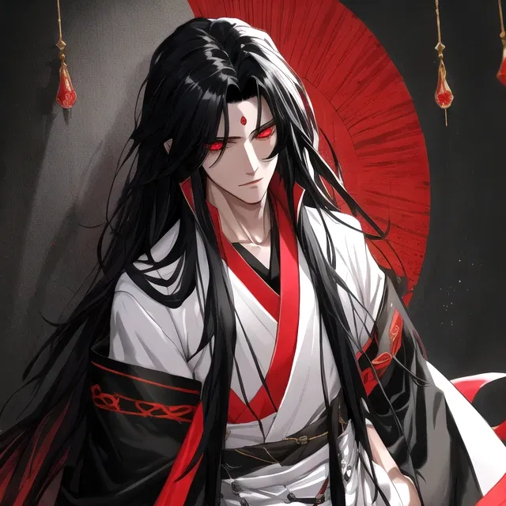

Sanket Doshi

Summary
Experienced software engineer with a strong background in web development and game development. Passionate about creating innovative solutions and staying up-to-date with the latest technologies.
Education
- Class 10+2 from Delhi Public School Ruby Park, Kolkata(2004-2022)
- Bachelor of Technology in Computer Science and Engineering(AIML) from Techno India University, Kolkata(2022-2026)
Projects
- Web Development
- Developed a responsive e-commerce website using React, Node.js, and MongoDB, which received over 10,000 monthly visitors.
- Implemented a real-time chat application using Socket.io and Express.js, allowing users to communicate seamlessly.
- Game Development
- Created a 2D platformer game using Unity and C#, which was published on the Google Play Store.
Skills
- Full-Stack Web Development
- Proficient in HTML, CSS, JavaScript, React, Node.js, and MongoDB.
- Experience with responsive design and cross-browser compatibility.
- Full-Stack Game Development
- Experienced in using Unity and C# for game development.
- Understanding of game design principles and player experience.
- 3D Modeling
- Experience with Blender and Maya for creating 3D assets.
- 2D and 3D Digital Art
- Experience with various digital art tools and techniques including Photoshop and Blender animation.
Awards and Achievements
- Received the "Best Web Developer" award at the Techno India University Annual Tech Fest in 2023.
- Won first place in the "Game Development Challenge" at the Kolkata Game Jam in 2024.
Other links
My Hobbies
Contact Me